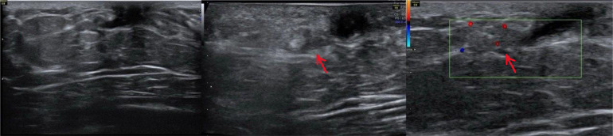

Ficha del catálogo
Papiloma intraductal
- Sistema
- Mama
- Modalidad
- US
- Región
- Mama, región retroareolar
- Dificultad
- Intermedio
El papiloma intraductal es una proliferación epitelial que crece dentro de un conducto galactóforo sobre un eje fibrovascular. Es la causa más frecuente de secreción sanguinolenta por el pezón y suele localizarse en los conductos principales de la región retroareolar. Su interés radica en que puede asociarse a lesiones de mayor riesgo en el tejido vecino, por lo que la mayoría se extirpa.
Técnica
El ultrasonido con transductor lineal de alta frecuencia es la técnica que mejor demuestra la lesión intraductal, explorando de forma radial los conductos retroareolares. El Doppler color busca el eje vascular que la nutre. La resonancia con contraste se emplea cuando existe secreción sospechosa y el resto de las pruebas no localizan la lesión.
Qué observar
- Conducto dilatado con contenido sólido en su interior
- Nódulo intraductal de contorno liso con eje vascular en el Doppler
- Extensión de la lesión a lo largo del conducto y distancia al pezón
- Contenido del conducto, líquido o con detritos
- Solución de continuidad de la pared del conducto, que sugiere agresividad
- Presencia de calcificaciones o de nódulos adicionales periféricos
Hallazgos
Se identifica un conducto retroareolar dilatado que contiene una lesión sólida ovalada, de bordes definidos, con un pedículo vascular claramente visible con Doppler color. La lesión puede ser única y central o múltiple y periférica, forma que se asocia a mayor riesgo. En la resonancia se comporta como un realce nodular o segmentario que sigue el trayecto ductal.
Perlas
El eje vascular único que entra en la lesión es el hallazgo que sugiere papiloma frente a un simple detrito o coágulo intraductal, que es avascular. Aun así, ningún rasgo de imagen distingue con certeza el papiloma benigno del que alberga atipia o carcinoma, de modo que la lesión intraductal sólida requiere valoración histológica.
Diagnóstico diferencial
- Ectasia ductal con detritos
- El contenido es móvil, sin vascularización interna, y desplaza con la compresión del transductor.
- Carcinoma ductal in situ
- Suele mostrar calcificaciones agrupadas de distribución ductal y realce segmentario en resonancia.
- Fibroadenoma retroareolar
- Es una lesión sólida bien delimitada fuera de la luz del conducto, con orientación paralela a la piel.
- Carcinoma papilar
- Tiende a ser de mayor tamaño, con componente sólido irregular y a veces rotura de la pared ductal.
Simuladores
- Coágulo intraductal en una secreción hemática
- Quiste con contenido espeso adyacente a un conducto
- Pliegue de la pared ductal en un conducto muy dilatado
Por modalidad
- US
- Es la técnica principal, muestra la lesión dentro del conducto y su eje vascular, y guía la biopsia.
- RM
- Localiza lesiones no visibles con otras técnicas ante secreción sospechosa y valora la extensión ductal.
Protocolo
Ultrasonido mamario con transductor lineal de alta frecuencia, explorando la región retroareolar en planos radiales y antirradiales con abundante gel y presión mínima para no colapsar los conductos. Se aplica Doppler color con escala de velocidades baja para identificar el pedículo. El estudio se completa con mamografía en las pacientes con indicación por edad y con biopsia con aguja gruesa guiada por ultrasonido.
Clasificación
Errores frecuentes
- Comprimir en exceso con el transductor y colapsar el conducto, ocultando la lesión
- Considerar benigna una lesión intraductal sin estudio histológico
- No buscar lesiones periféricas adicionales cuando el papiloma es múltiple

papiloma intraductal secreción por el pezón conducto galactóforo eje vascular ecografía mamaria biopsia retroareolar